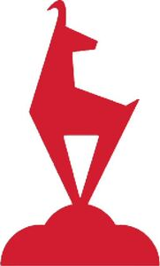

Trade Mark Journal No.2025/025 20 June 2025
WO0000001855964 (3,4,5,6,7,8,9,10,11,12,14,15,16,18,19,20,21,22,23,24,25,26,27,28,29,30,32,33,35,36,38,39,40,41,42,43,44,45)
Office of origin: Austria
Date of International Registration:30 September 2024
Date of designation in the UK:
30 September 2024

The mark contains the colour red.
International priority date claimed: 9 July 2024
(Austria)
- Class 3
- Sun creams; sunscreen preparations; care preparations [cosmetics]; sunscreen lotions; room fragrance preparations; room fragrances with fragrance sticks; organic cosmetics; body cleansing and body care preparations; hygiene preparations as body care products; cosmetics; cosmetic facial care products; cosmetic products; cosmetic preparations for body care; cosmetic oils; mineral oils [body and beauty care preparations]; body and beauty care preparations; perfumery products and fragrances; aromatics for fragrances; aromatics for perfumes; fragrance balls; fragrance preparations; perfume; perfumery products; perfumed creams; cleaning agents for golf clubs; essential oils; essential essences; beauty masks; beauty care products; massage oils; hair oils; hair shampoos; hair lotions; hair care products; hair conditioners; fragrances; scented oils; scented sachets; scented water; scented bath salts; potpourris [fragrances]; soaps; tanning oils; tanning milk; tanning creams; tanning lotions; tanning preparations [cosmetics]; essential oils and aromatic extracts; personal care products; cleaning and fragrance preparations, not for personal use; abrasives; tailors' and cobblers' wax; animal grooming preparations; facial care products; deodorants; room fragrances; aromatic oils; scented sachets for eye pillows; hand creams; lotions for use after sunbathing; non-medicated toothpaste; skin care lotions [cosmetics].
- Class 4
- Ski wax; candles for lighting purposes; fuels and illuminants; electrical energy; lubricants and industrial greases, waxes and fluids; dust-binding agents; dust-absorbing agents; candles; perfumed candles; night lights [candles]; candle sets; tinned candles; Christmas tree candles.
- Class 5
- Pharmaceutical and veterinary products; dietetic products for medical purposes; dietetic food preparations for medical purposes; liquid food supplements; liquid vitamin supplements; herbal supplements in liquid form; protein supplement shakes; mineral water salts; multivitamins; food supplements; vitamin-enriched drinks for medical purposes; infant and toddler food; medicines; balms for medical purposes; bath teas for therapeutic purposes; chemical-pharmaceutical preparations; dietary infusions for medical purposes; dermatological pharmaceutical products; foot care products for athletes; foot lotion for athletes; chemical products for pest control; biological herbicides; mouth rinses for medical purposes; dental preparations and products and medical dentifrices; cloth nappies; medicinal teas; food for infants.
- Class 6
- Building materials and construction elements of metal; statues and works of art of base metal; small hardware of metal; metal stepladders; metal step stools; metal foils for packaging purposes; metal anchors; art objects of base metal casting; metal mouldings; steel castings [semi-finished products]; metal locks; common metal plates for use in manufacture of keys; bicycle locks of metal; metal keys; 3D works of art of base metal for walls; bronze figurines being objects of art; bronzes [objects of art]; busts of bronze; busts of base metal; busts, not of precious metal; figurines of base metal; figures of base metal; figurines of bronze; base metal figurines being art objects; pewter figurines; base metal commemorative goblets; metal commemorative plaques; cast bronze art objects; non-precious metal art objects in the form of model animals; base metal art objects; stands being metallic structures; base metal statues; base metal decorative figurines; metal weather vanes; base metal wall decorations; decorations for vehicles [hood ornaments] of base metal; works of art and ornaments made mainly of base metal, including sculptures; statuettes of base metal; statues of base metal; statues of base metal alloys; statues of bronze; sculptures of base metal; sculptures of metal; sculptural works of art of base metal; metal brackets.
- Class 7
- Sweeping, cleaning and washing machines; dispensing machines; electric generators; moving and handling equipment for use in transport systems for processing materials; rescue spreaders [electric rescue shears]; pumps (machines), compressors (machines) and blowing machines; emergency and rescue machines and machine tools; machines and machine tools for material processing and production; mechanical equipment for agriculture, earthworks, construction work, oil and gas extraction work and mining work; industrial robots.
- Class 8
- Hand-operated tools and implements; table cutlery [knives, forks and spoons]; side arms, other than firearms; cutlery; cutlery, kitchen knives and kitchen cutting tools; hand-operated implements and tools for working with materials and for construction, repair and maintenance work; hand-operated implements for personal hygiene and beauty care for humans and animals; lifting tools; sharp and blunt cutting and stabbing weapons; emergency and rescue hand tools; cutlery boxes; cutlery of precious metal in boxes; oyster openers; fishing knives; butter knives; dessert spoons; egg slicers; disposable forks; cutlery of precious metal; cutlery for children; fondue forks; forks [hand tools]; forks and spoons; poultry shears; hand-operated bread knives; cheese slicers, non-electric; ceramic knives; non-electric can openers; souvenir collectors' spoons; silverware [cutlery, forks and spoons]; weighing knives; leather knife sheaths; spoons; teaspoons.
- Class 9
- Eyeglass chains; eyeglass straps; eyeglass bags; ski goggles; sunglasses; cases for sunglasses; rangefinders for golf; glacier goggles; bicycle helmets; sports helmets; DVD players; eyeglasses for protective purposes; sports goggles; apparatus for measuring the speed of the golf club swing; radios; software; software for computer games; skateboard helmets; helmets for sports; helmets for head protection; apparatus for scientific research and laboratories, teaching apparatus and simulators; apparatus, instruments and cables for electricity; downloadable and recorded data; information technology, audiovisual, multimedia and photographic equipment; magnets, magnetising and demagnetising devices; measuring, detection, monitoring and electronic control apparatus; navigation, orientation, location tracking, target tracking and mapping equipment; optical apparatus, enhancers and correctors; safety, security, protection and signalling devices and equipment; diving equipment; scientific and laboratory apparatus for physical reactions using electricity; audiovisual teaching apparatus; recorded files; recorded CDs; recorded media; databases; digital maps; downloadable digital files authenticated by non-fungible tokens [NFTs]; electrical or electronic data directories; electronically recorded data from the internet; electronic timetables; downloadable emoticons for mobile phones; downloadable multimedia files; holograms; light-sensitive, exposed reprographic plates; magnetically recorded data; recording substrates [optical]; recording discs for optical images; spectacles, sunglasses and contact lenses; smart glasses being data processing apparatus; sunglasses cases; sunglasses chains; sunglasses cords; ski helmets; GPS devices; smartwatches; electronic sports training simulators [computer hardware and software based teaching apparatus]; teaching apparatus; electronic teaching and instructional apparatus and instruments; virtual reality software; software for sports and running; altimeters; hand-held measuring devices; frequency meters; lasers; 3D glasses; audio-visual equipment; devices for playing sound and image carriers; computer hardware for telecommunications; communication modems; intelligent gateways for communication; downloadable computer software applications for the minting of non-fungible tokens [NFTs]; downloadable digital music files authenticated by non-fungible tokens [NFTs]; downloadable digital image files authenticated by non-fungible tokens [NFTs]; data processing systems; application software; data and file management and database software; holographic images; virtual image generation software; recorded discs with images stored thereon; digital image processing software; computer software for processing digital images; electronic magazines; downloadable maps; downloadable electronic maps; lenses for sunglasses; cycling glasses; reflective strips for clothing; magnetic badges; podcasts; downloadable podcasts.
- Class 10
- Clothing especially for operating rooms, patient examination gowns, protective masks for medical purposes, compression garments, gloves for medical purposes, neural helmets for medical purposes, orthopaedic footwear; hearing protection devices; physical therapy equipment; baby feeding dummies; medical furniture and bedding, patient repositioning equipment; medical and veterinary apparatus and instruments; mobility aids; sex aids; prostheses and artificial implants; baby bottles.
- Class 11
- Headlamps; torches; LED lamps; flues and installations for discharging exhaust gases; igniters; lighting and light reflectors; apparatus for heating and steaming articles and materials, not for industrial purposes; tanning apparatus; burners, boilers and heaters; burners and heaters for laboratory purposes; fireplaces; air treatment equipment, wastewater treatment apparatus; heating, ventilation, air conditioning and air purification equipment and installations; heating elements and filaments; appliances for cooking, heating, cooling and preserving food and beverages; water filters for industrial and domestic use; refrigeration and freezing equipment; nuclear installations; drying installations; sanitary installations and equipment, water supply installations; regulating and safety accessories for water or gas apparatus and pipes; personal heating and drying appliances; fog and smoke machines; ornaments for Christmas trees [lighting]; ceramic lanterns; bicycle lamps, reflectors for attachment to bicycle spokes; lamps for fairy lights; candle torches.
- Class 12
- Vehicles and means of transport; golf carts; golf carts [vehicles]; children's bicycles; bicycle bags; bicycle baskets; bicycle saddlebags.
- Class 14
- Ornaments made of or coated with precious or semi-precious metals or stones or imitations thereof; key fobs; key rings; pins [jewellery]; jewellery pendants of precious metal or clad therewith; precious stones, pearls and precious metals and imitations thereof; jewellery; key rings and key chains and pendants therefor; jewellery and watch boxes; timepieces; wristwatches; watch cases; sports watches; watches; gift boxes for watch articles; small jewellery boxes not of precious metal; musical jewellery boxes; jewellery; necklaces [jewellery]; medallions [jewellery]; pendants [jewellery]; brooches [jewellery]; scaled-down models [jewellery] of precious metal; pendants for key rings; key rings plated with precious metal; key rings of precious metals; key fobs of leather; key rings of leather; jewellery boxes of leather; festive jewellery [figurines] of precious metal, except Christmas tree decorations; glass jewellery; statuettes of semi-precious stones; statuettes of semi-precious metals; statuettes of imitation gold; statuettes of precious metals and their alloys; figurines of precious stones; parts for wristwatches; badges of precious metal; pins [jewellery], leather bracelets.
- Class 15
- Musical instruments, their parts and accessories.
- Class 16
- Invitation cards; planners [printed matter], printed geographical maps; broadsheets; brochures, magazines and leaflets relating to tourism; printed educational material relating to telecommunications; printed matter, stationery and educational supplies; printed matter [brochures]; spirit masters for mimeographing; periodicals [magazines]; advertising leaflets; stickers [stationery]; stickers; photographs, cards; postcards and picture postcards; printed decorative labels for wine bottles; books; packaging materials; printed paper packaging materials; artists' materials and supplies; paper filter materials; adhesives for stationery or household purposes; works of art and figures of paper or paperboard and architectural models; paper and paperboard; bags, pouches and articles for packaging, wrapping or storage, of paper, paperboard or plastics; printed matter; printed periodicals in the field of tourism; photographs; stationery; artists' materials; stationery and teaching materials; printing type; brochures in the field of real estate sales; newspapers; crossword puzzles [printed matter]; periodicals; periodical magazines; paper labels; printed paper labels; leaflets; decorative stickers for helmets; instructional material; pictures; prints in the nature of pictures; framed or unframed pictures [paintings]; artists' materials and modelling materials; works of art and ornaments made mainly of paper or paperboard, including figures and architectural models; 3D decals for use on any surface; announcement cards [stationery]; paper tags; decals; tear-off calendars; stickers [decals]; motor vehicle bumper stickers; paper tea filters; address labels; address lists; paper banners; printed decals for embroidery or fabric appliqués; printed cards; printed greeting cards with electronic information stored therein; printed cardboard advertising boards; printed paper advertising boards; picture postcards; picture cards; educational and teaching material; pads [stationery]; brochures; leather book covers; brochures relating to games; office equipment; badges of cardboard; guest books; printed brochures; printed vouchers; printed manuals; printed information leaflets; printed cards, printed calendars; printed advertisements; printed symbols [decals]; printed advertising material; printed pictorial material; graphic reproductions; greeting cards; packaging paper; packaging material made of recycled paper; art mounts; writable pads; paper napkins; paper bags for packaging purposes; paper doilies [placemats]; tablecloths of paper; leather-bound diaries; Christmas cards; stickers; stickers, stickers [stationery]; wrapping paper; gift-wrapping paper; wrapping paper [stationery]; paper bibs with sleeves; paper pennants; paper coasters; signs [paper seals]; papier-mâché statuettes; metal banknote clips; non-metal banknote clips; trading cards; brush pens; place cards; push pins.
- Class 18
- Umbrellas; luggage tags; leather purses and wallets; leather bags; hides and skins; umbrellas and parasols; travelling bags and suitcases; travelling and hand trunks; umbrellas, parasols and walking sticks; travelling and hand trunks, in particular carrying bags for animals; harnesses for animals; garments for animals, in particular coats and pullovers; walking sticks, luggage, bags, wallets and carrying bags; umbrellas and parasols; saddlery, whips and clothing for animals; briefcases of leather; beach bags; belt bags and hip bags; wallets; shopping bags of canvas; shopping bags of leather; purses; suitcases; handbags of leather; cosmetic bags; toiletry bags; canvas bags; key cases; leather bags and wallets; leather straps [leather strips]; golf umbrellas; parasols; mountain poles; extendable trekking poles; walking stick handles; collapsible walking sticks; hiking sticks; leather; leather credit card pouches; backpacks for mountaineers; rucksacks; saddlery; fly sheets for horses; rain sheets for horses; saddlecloths for horses; chamois leather, not for cleaning purposes; chevreau leather [goatskin]; artificial furs; leather and imitation leather; leather boxes; leather girths; leather cords; empty toiletry bags; furs [animal skins]; butts [parts of hides]; unworked or semi-worked leather; animal skins; semi-worked fur; hiking bags; carry-on bags; travelling bags; shoulder bags; handbags, purses and wallets; leather bags; leather document bags; leather shoulder straps; travelling cases of leather; sports bags; grocery tote bags; beach bags; reusable shopping bags; banknote holders; Nordic walking poles.
- Class 19
- Statues and works of art of stone, concrete or marble, semi-processed or artificial wood; doors, gates, windows and window coverings, not of metal; works of art and ornaments made predominantly of non-metallic mineral materials, including sculptures of stone, bitumen and concrete or their substitutes; unprocessed and semi-processed non-metallic mineral materials of stone, clay, bitumen or cement and their substitutes; building materials and building elements, not of metal; buildings and transportable buildings, not of metal; ceramic floor tiles; wooden planks; wooden boards; wooden planks.
- Class 20
- Beds, mattresses, cushions and pillows, beds; fastening anchors, not of metal, for attaching pictures to walls; containers, not of metal [storage, transport], and closures and holders thereof, not of metal; displays, stands and signage, not of metal; ladders and mobile stairs, not of metal; statues, figures and works of art and ornaments of wood, wax, plaster or plastics; works of art and ornaments, including sculptures, made principally of wood, straw, bone, shell, wax, resin, plastics and plaster or their substitutes; unworked and semi-worked bones, shells, amber, reeds, bamboo, rattan and cork or their substitutes; cushions; pillows; animal housing and beds; dog baskets; cat baskets; pet cushions; birdhouses; furniture; storage baskets [furniture]; mirrors; decorative mirrors; mirror frames; display frames; decorative cushions; wooden boxes; statuettes of synthetic resins; statuettes of plastics; statuettes of amber; statuettes of ivory; trophies [statuettes] of plastics; upholstered furniture; upholstered cushions; upholstered armchairs.
- Class 21
- Brushes for cleaning golf accessories; soap boxes; soap dishes; shot glasses; wine jugs; wine-tasting pipettes; wine coolers; wine glasses; wine pourers; chinaware; porcelain plates; wine bottle openers; coolers for wine bottles; coasters of precious metal for wine bottles; laundry containers [household containers]; porcelain; porcelain jugs; porcelain boxes; porcelain figurines; porcelain ornaments; kitchen utensils, namely wood cutting boards, cooking spoon, dough roller, dough spatula, mixing bowl and biscuit cutter moulds; kitchen utensils; porcelain art objects; porcelain flower bowls; porcelain cachepots; porcelain mugs; porcelain decorative objects; porcelain coasters, porcelain or glass signs; earthenware; earthenware statues; earthenware bowls; earthenware jugs; earthenware art objects; earthenware flower bowls; household containers; drinking bottles; drinking cups; personal hydration packs comprising a fluid reservoir and a delivery tube; water bottles; drinking cups of precious metal; glass bottles; drinking bottles for sporting activities; household or kitchen utensils and containers; cookie [biscuit] cutters; combs and sponges; brushes (other than paint brushes); brush-making materials; cleaning utensils and implements; steel wool; unworked or semi-worked glass (except building glass); glassware, porcelain and earthenware; leather coasters, crockery, cookware and containers; household articles for the care of clothing and footwear; household cleaning articles, brushes and brush-making materials; cosmetic utensils, eyelash brushes, toilet cleaning utensils, brushes and sponges for personal hygiene, fitted vanity cases, abrasive sponges for scrubbing the skin, bath sponges, make-up sponges, sponge holders, sponges for household purposes, cloths for cleaning, dusting cloths [rags], polishing cloths, electric and non-electric combs and toothbrushes, dental floss, foam toe separators for use in pedicures, powder puffs, combs and sponges, brushes, except paintbrushes; statues, figurines, signboards and works of art of porcelain, ceramic, earthenware and glass; works of art and ornaments made mainly of ceramics and glass or their substitutes, including sculptures; unworked and semi-worked glass, not for building purposes; bottle openers; bottle openers with knife; glassware; hand-cut crystal glassware; glassware for household use; napkin holders; napkin rings; cups; china mugs; cups of precious metal; cups of earthenware; cups and mugs; cups of glass; coffee cups; coffee pots; coffee mugs; tea cups; bread baskets; bread bins; vacuum flasks; vacuum flasks for household use; drinking straws; glass flower bowls; works of art made of glass; decorative objects of glass; decorative sculptures of glass; decorative figurines of glass; baking moulds; mess-tins [cookware]; baking dishes; baking moulds [not toys]; cake tins; baking tins and trays; glasses for schnapps; glasses [drinking vessels]; ceramic tableware; ceramic mugs; works of art made of ceramic; ceramic coffee service; ceramic cachepots; ceramic piggy banks; ceramic figurines; ceramic statues, ceramic statuettes, egg cups; statuettes of crystal or glass; statuettes of fine china or porcelain; porcelain statuettes; terracotta statuettes; earthenware statuettes; porcelain statuettes; porcelain statuettes; chopping boards; pouring spoons; kitchenware; pouring spoons [kitchen utensils]; aluminium moulds [kitchen utensils]; kitchen utensils; skimmers [kitchen utensils]; carafes; glass carafes; decanter carafes; teapots; brushes for cleaning carafes; moulds for ice cubes; ice cube moulds for refrigerators; reusable ice cubes.
- Class 22
- Fabric gift bags for wine; bags and sacks for packaging, storage and transport; sails; ropes, twine, non-metal slings for loading and non-metal bindings; padding and stuffing materials, except of paper, cardboard, rubber or plastics; tarpaulins, awnings, tents, unfitted vehicle covers, and unfitted liners for the cargo area of vehicles [in the nature of a tarp]; nets; raw textile fibres and their substitutes.
- Class 23
- Yarns and threads.
- Class 24
- Filter materials of textiles; textile fabrics; covers for pillows; blankets of wool; bed linen and blankets; blankets for pets; woollen blankets [knitted blankets]; woven fabrics and textile articles; bed and table covers; bed sheets; textile articles and substitutes for textile articles; sew-on labels of fabric for clothing; labels of textile material; household textiles; household linen; textile tissues; woollen blankets; woollen fabrics; pillow shams; pillowcases; duvet covers; mattress and pillow covers; synthetic fibre duvets; table cloths; baby sleeping bags; cloth napkins; cloth doilies; cloth table runners; baby blankets, felt; non-woven felt; cushion cover fabrics; quilts [blankets]; bed spreads [blankets]; textile materials for the manufacture of blankets; woollen blankets [knitted blankets]; blankets filled with goose feathers; blankets for covering beds; coasters of fabric.
- Class 25
- Clothing; sportswear; jackets being sportswear; quilted jackets [clothing]; slipovers [clothing]; scarves [clothing]; traditional costumes [clothing]; windproof clothing; knitted clothing; clothing of leather; clothing of linen; clothing made of fur; sportswear; equestrian clothing [except riding helmets]; footwear; footwear for golfers; footwear for leisure; sports headgear [except helmets]; leather headgear; walking shoes; walking boots; golf shoes; golf caps; golf trousers; golf shirts; golf skirts; ski trousers; ski boots; ski jackets; ski caps; ski suits; ski clothing; ski gloves; ski and snowboard boots and metal fittings therefor; sports trousers; sports socks; sports jackets; sports shoes; sports shirts; sports caps; sports shoes [low shoes]; wide sports jumpers [sweatshirts]; sports shirts with short sleeves; cycling trousers; cycling shorts; cycling clothing; cycling gloves, tops for cyclists; rain hats; rain trousers; rain boots; mackintoshes; rain capes; rainwear; baby equipment [clothing]; outerclothing for babies; parts of clothing, footwear and headgear, namely cuffs, pockets, ready-made linings, heels and heelpieces, cap peaks, hat frames (skeletons), neckbands, gussets and waistbands; headbands [clothing]; sweat-absorbent headbands; cycling caps; headbands; caps with visors; headgear; shoes; caps; hoods; casual wear; kerchiefs [clothing]; running shoes; running shoes with spikes; silk clothing; footwear for sports; clothing authenticated by non-fungible tokens [NFTs]; leather clothing; leather dresses; gloves, including gloves of leather, hide or fur; wool socks, scarves and stoles; shawls and headscarves; scarves as club outfits; children's shoes; children's boots; leather shoes; baby shoes; knitted baby shoes; trekking shoes; baby boots; cap visors; caps [headgear]; gloves; gloves [clothing]; golf clothing [except gloves]; knitted gloves; wooden clogs; cloth bibs; sleepwear; baby panties [clothing]; training wear; baby bodysuits; casual wear shoes; slippers; trainers; winter boots; sandals; rubber shoes and boots; sandals and beach shoes; leather suits; leather belts [clothing]; cardigans; leather jackets; sun visors [headgear]; track jackets; shirt jackets; paper aprons; wearable blankets [clothing]; cycling shoes; training shorts; face masks [clothing]; jogging sets [clothing]; undergarments; overcoats; one-piece suits [clothing]; leather trousers; leather aprons (clothing).
- Class 26
- Buttons; metal buttons; patches for clothing; lace and embroidery; ribbons and laces; buttons, hooks and eyes, pins; artificial flowers; charms, other than for jewellery, key rings or key chains; patches for clothing; patches for repairing articles of clothing; reinforcing tapes for clothing; decorative patches for clothing; sewing kits, decorative ribbons [haberdashery], novelty badges [clothing accessories] and ornamental textile ribbons; charms, other than for jewellery, key rings or key chains; hair ornaments, hair curlers, hair fastening articles and false hair; insect needles and pins; artificial fruit, flowers and vegetables; embroidered badges; badges, other than of precious metal; badges [button]; rubber or silicone charm accessory for shoes; scarf clips; press studs; brooches [clothing accessories]; fashion buttons [badges] for clothing, needles; needles of precious metal.
- Class 27
- Carpets made of fur; floor coverings and artificial floor coverings; wall and ceiling coverings; wallpapers; wallpapers with 3D visual effects; wallpapers made of paper; wallpaper in the nature of room-size decorative adhesive wall coverings; mats; carpets, rugs and mats.
- Class 28
- Sports equipment; skis; ski bases; ski skins; ski poles; ski cases; ski boards; ski bindings; covers for skis; bags for skis; covers for ski bindings; golf balls; golf bags; golf putters; golf clubs; golf trolleys; golf ball markers; golf gloves; golf practice nets; golf hole inserts; golf club covers; golf club grips; golf club bags; golf transport bags; golf club covers; golf tee training equipment; golf irons; golf tees; golf practice equipment; golf training aids; golf ball retrievers; bags for golf balls; holders for golf tees; stands for golf bags; grips for golf clubs; putting practice mats [golf training equipment]; articles for golf; wheels for skateboards; Christmas tree decorations; Christmas tree decorations; candle holders for Christmas trees; bells for Christmas trees; games; toy trains; electronic games; mechanical games; dice for games; balls being sports articles; dolls for playing; toy sets; toy animals; toy balls; toy jewellery; toy figures [toys]; porcelain dolls; gymnastic articles; playing cards; equipment for sports and physical exercise; fairground and playground apparatus; weightlifting belts [sports articles]; sports training equipment; toy sports equipment; leather golf bag tags, grip tapes for golf clubs; golf mats; golf club head covers; children's indoor play equipment; baby rattles including teething rings; Christmas tree tags [Christmas tree ornaments]; snow globes; toy baking moulds; soft toys; children's toys; trading card games; trading cards for games; playing boards for trading card games; ski bindings and their parts; joke articles for parties as well as festive decorations and artificial Christmas trees; kicking tees; alpine skis; shaped covers for golf bags; bags specially adapted for sports equipment; customised bags for sports articles; arm protection pads for cyclists; ball catchers; leg protectors for athletes; bindings for alpine skis; dart boards; sporting articles; knee guards [sports articles]; golf flags [sports articles]; elbow pads for cycling [sports articles]; toys, games and playthings; decorative action figures of bronze; decorative action figures of base metal.
- Class 29
- Meat, fish, poultry and game, meat extracts; preserved, frozen, dried and cooked fruit and vegetables; jellies; compotes; eggs; edible oils and fats; meat and meat products; dairy products and their substitutes; natural and artificial sausage casings; non-living fish, seafood and molluscs; soups and broths, meat extracts; processed fruit, mushrooms, vegetables, nuts and pulses; birds' eggs and egg products; prepared insects and larvae; jams; fruit jams; jellies and jellies, jams, compotes, fruit and vegetable spreads; butter; cheese; preserved fruit; pickled fruit; jarred fruit; processed fruit; dried fruit.
- Class 30
- Sugar, honey, treacle; spices; coffee; tea; flour; cereal preparations; bread; bakery products; flour-based confectionery; ice cream; salt; vinegar; sauces [condiments]; table salt, condiments, spices, flavourings for beverages; coffee, tea, cocoa, artificial coffee; rice, tapioca, sago; flour and cereal preparations; bread, pastry; confectionery (non-medicated); edible ices; sugar, honey, treacle; yeast, baking powder; salt, mustard, vinegar, sauces (condiments); coffee, tea, cocoa and substitutes therefor; confectionery as Christmas tree decorations; chocolate-covered biscuit wafers; black tea [English tea]; non-medicated teas in bags; flavourings made from tea; tea-based drinks; preparations for chocolate drinks; honey; honey [for edible purposes]; honey [naturally matured]; sweet spreads [honey]; non-medicated sweets with honey; preserved culinary herbs [spice]; powdered spices; spices for food purposes; flavoured vinegar; confectionery containing jam; confectionery containing jelly; ice cream, frozen yoghurt and sorbets; table salt, condiments, spices, flavourings for beverages; processed cereals and starches for food and goods made thereof, baking preparations and yeast; sugar, natural sweeteners, sweet glazes and fillings and bee products for edible purposes; sugar, natural sweeteners, sweet glazes and fillings and bee products for edible purposes and edible decorations; breakfast cereals containing a mixture of fruit and fibre; pastry products filled with fruit; pies consisting of creams and fruit; cooling ice.
- Class 32
- Beers; aerated mineral waters; non-alcoholic beverages; fruit drinks; syrups and other non-alcoholic preparations for making beverages; mineral and aerated waters and other non-alcoholic beverages; syrups for making lemonade; non-alcoholic preparations for making beverages; beers and non-alcoholic beers; fruit juices; carbonated fruit juices; organic fruit juices; non-alcoholic soft drinks; non-alcoholic cocktail mix drinks; flavoured mineral waters; flavoured carbonated drinks; non-carbonated non-alcoholic drinks; mineral waters [beverages].
- Class 33
- Schnapps; wines; wine-based beverages; alcoholic bitters; alcoholic cocktail mixes; alcoholic punch; mulled wines [alcoholic hot beverage]; digestifs [liqueurs and spirits]; alcoholic beverages other than beer; sparkling wines; alcoholic carbonated beverages, other than beer; alcoholic essences and extracts; alcoholic preparations for the preparation of beverages; alcoholic preparations for the manufacture of beverages.
- Class 35
- Distribution of brochures for advertising purposes; distribution of advertisements and advertising material [flyers, brochures, leaflets and samples]; advertising in the field of tourism and travel; distribution of advertising brochures; publication of advertising brochures; advertising and marketing; retail services relating to sports equipment; arranging and placement of advertisements; creation and placement of advertisements; dissemination of advertising matter by mail; advertising in electronic media and especially on the internet; direct advertising by e-mail; planning and organising trade fairs, exhibitions and presentations for commercial or advertising purposes; business management; company administration; secretarial services and office work; advertising in magazines, brochures and newspapers; magazine advertising; public relations services; consultancy in the field of public relations; dissemination of advertising, marketing and publicity materials; assistance in the management of commercial enterprises in the field of public relations; video film production for advertising purposes; online advertising; advertising for real estate; advertising for services, advertising and advertising services; advertising by means of direct marketing; advertising for the travel industry; advertising via the internet; promotion [advertising] for travel; advertising, marketing and promotional services; advertising of commercial or residential property; advertising by any available means of public communication; promotion, advertising and marketing through online websites; advertising, including promotion of third party goods and services through sponsorship and licence agreements in relation to international sporting events; distribution of advertising material; billboard advertising; digital advertising services; online advertising and marketing services; online marketing consultancy services; distribution and dissemination of advertising materials [leaflets, prospectuses, printed material, samples]; retail services and online retail services relating to clothing, headwear, footwear, bags, sportswear, sunglasses and sports bags; advertising for athletes; advertising for business establishments; advertising for motor vehicles; advertising for hotels; advertising for businesses; retail services in relation to smartwatches; public relations services; planning, organising and conducting events for business and promotional purposes; office work; providing an online marketplace for buyers and sellers in relation to the trading and promotion of virtual goods, digital files and 3D assets authenticated by non-fungible tokens; advertising; advertising, promotional and public relations services; advice on advertising, public relations and marketing; post-production of advertising or commercials; advertising for special events; advertising of goods and services through sponsorship of sporting events; sales promotion and advertising; advertising and sales promotion; advertising for financial services; advertising by means of promotional literature, production of advertising material and commercials; provision of advertising space, advertising time and advertising media; information on commercial matters relating to wine; retail services relating to cups and glasses; wholesale services relating to cups and glasses; assistance in business matters, management and administrative services; updating of advertising information in a computer database; preparation of advertising material; audiovisual advertising for companies; information relating to advertising; marketing information; outdoor advertising; advertising, marketing and promotional consultancy, advisory and assistance services; sponsorship search consultancy services; computerised advertising; database marketing; sales promotion services; digital marketing; development of advertising flyers; development of advertising brochures; development of sales promotion campaigns; development of advertising concepts; development of advertising campaigns for companies; creation of advertising material; event marketing; publication of publicity texts; trade show and commercial exhibition services; trade marketing [excluding sales]; radio and television advertising; internet advertising; information services relating to advertising; marketing; marketing relating to travel; marketing relating to e-sports events; marketing via the internet; merchandising; business management services relating to launching of new products; organisation and execution of promotional events for third parties; organisation and execution of advertising and promotional events; press advertising; advertising planning services; planning of marketing strategies; organisation of promotional events to raise funds for charity; marketing services relating to launching of new products; product marketing; promotion [advertising] for concerts; product presentation to the public for third parties; product demonstrations and presentations; sponsorship search for sports competitions; sponsorship search; advertising and marketing services provided via blogs; promotional marketing; negotiation of advertising contracts; advertising brochure writing; corporate marketing services; promotion of third party goods and services by arranging for sponsors to associate their goods and services with sports competitions; arranging advertising contracts for third parties; publication of printed material for advertising purposes, in electronic form; publication of printed material for advertising purposes; publication of advertising material and texts; reproduction of advertising material; publication of advertising material; advertising agency services for athletes; preparation and implementation of media advertising plans and concepts for third parties; preparation of advertising campaigns; administration of competitions for advertising purposes; management of competitions for advertising purposes; management of marketing activities; advertising services relating to events; advertising services relating to the sale of goods; advertising services using graphics; advertising, including online advertising via a computer network; advertising services relating to sporting events; advertising services relating to cultural events and activities; advertising services relating to sporting activities; providing searchable online advertising guides; advertising of goods and services on websites [online]; advice on marketing management; advice on promotional activities; retail services and online retail services relating to non-alcoholic and alcoholic beverages; retail services and online retail services relating to stickers, badges and statuettes; retail services and on-line retail services relating to toys, soft toys, pillows, blankets, textile goods, knives, ceramic mugs, ceramic tableware and glasses.
- Class 36
- Insurance services; financial services; monetary transactions; real estate affairs; financing services; issuance of prepaid cards and vouchers; safe deposit services; financial services, monetary transactions and banking services; financial appraisal services; fundraising and financial sponsorship; real estate services; pawnbroking services; underwriting in relation to insurance; insurance services; settlement of travellers cheques and issuance of travellers cheques as financial services for third parties; issuance and redemption of tokens of value; issuance of gift vouchers to be redeemed for goods or services; issuing gift vouchers; issuing prepaid gift cards; issuing prepaid cards as electronic travel tickets; issuing prepaid gift cheques; issuing vouchers as cash substitutes; issuing prepaid cards; issuing vouchers with credit; issuing travel vouchers; issuing discount stamps; issue of travellers' cheques and cash vouchers; issue of travellers' cheques by travel agencies; issue of value vouchers as gift vouchers; provision of information for the issue of value vouchers; issuance of tokens of value, issuance of customer loyalty coupons and issuance of prepaid vouchers; rental of accommodation [flats].
- Class 38
- Telecommunications; electronic transmission of data; transmission of data, messages and information; computer communication and internet access services; telecommunications services; rental and leasing of telecommunications equipment and devices; communication services via a computer network; transmission of podcasts; podcast broadcasting services; data transmission services, audiovisual transmission services.
- Class 39
- Booking of tours; booking services for tourist tours; reservation services for booking sightseeing tours; agency services for booking tours; reservation and booking of transport services; booking of holiday tours and excursions; booking of tours by tourist offices; organisation and booking of day trips; organisation and booking of excursions; organisation and booking of tours; organisation and booking of excursions; organisation and booking of sightseeing tours; provision of information on bicycle rental; information, advice and reservation services relating to transport services; parking and storage of vehicles; transport services; rental services relating to vehicles, transport and storage; distribution by pipeline and cable; parking services and vehicle parking, mooring of boats and ships; transport; rental services relating to transport and storage; transport services; packing and storage of goods; organisation of tours; consultancy services relating to the shipment of goods; shipment of goods; rental services relating to transportation and storage; booking of travel tickets; booking of sightseeing tours by agencies; booking and reservation services relating to the organisation of sightseeing tours; computerised information relating to travel; computerised information relating to travel reservations; computerised travel reservations; travel agency services, namely organising the transport of travellers; travel tour guide services; travel agency services; provision of travel information relating to itineraries; agency services relating to the organisation of travel; travel booking services; rail ticket booking; organisation and booking of sightseeing city tours; airline booking; car rental booking.
- Class 40
- Printing of images on objects; leather processing; fur processing; framing of works of art; glazing of ceramics; duplication of audio and video recordings; printing and photographic and cinematographic development.
- Class 41
- Publication of printed matter; publication of non-downloadable online travel guides, maps, city directories and brochures for travellers; publication of newspapers, magazines, catalogues and brochures; publication of web magazines; advertising training; concert bookings; entertainment event bookings; theatre event bookings; ticketing and event booking services; booking of seats for shows and sporting events; booking of celebrity athletes for events [services of an event organiser]; booking of performing artists for events [services of an event organiser]; golf lessons; golf course services; rental of golf equipment; provision of golf courses; entertainment in the form of golf games; provision of training in the game of golf; organisation of professional golf tournaments or competitions; instruction [training] in the game of golf and related fitness exercises; information on entertainment events; ski instruction; ski schools; instruction in skiing; providing ski slopes; rental of ski equipment; provision of ski sports facilities; rental of ski sports equipment; recreational services in the field of skiing; sports training; sports entertainment; organisation of sports events and sports competitions; sports instruction services; sports education services; sports club services; sport camp services; provision of sports facilities; operation of sports facilities; operation of sports halls; organisation of sports tournaments; organisation of sports events and sports competitions; organisation of sports training courses; services for sports events, sports and athletics competitions and award ceremonies; cultural and sporting activities; organisation of sporting events [football]; rental of sports or fitness equipment; rental of sports equipment, except vehicles; recreational services; recreational hiking services, recreational horse riding services; recreational bobsleighing services; entertainment services, namely the online provision in non-downloadable virtual form of glasses, portable electronic devices and related accessories, digital animated and non-animated designs and characters and avatars for use in virtual environments for entertainment purposes; provision of multimedia entertainment services through a website; entertainment through concerts; organisation of entertainment competitions; organisation of sporting events; organisation of entertainment events; organisation of parties [entertainment]; live performances for entertainment; entertainment in the form of golf tournaments; entertainment in the form of tennis tournaments; entertainment in the form of athletics competitions; entertainment in the form of beauty contests; organisation of entertainment shows and music entertainment; organisation and performance of award ceremonies; fitness centre services; operation of fitness facilities; fitness training for adults and children; golf caddie services; organisation of cycling races; physical education; education; teaching; organisation of cultural events; organisation of sporting competitions; organisation of hobby competitions for entertainment purposes; education, entertainment and sporting activities; education, entertainment and sporting activities; ticket reservation and booking for educational and entertainment events and sporting events and activities; translation and interpreting; publishing, reporting and writing of texts; organisation of music festivals; event services for training courses; organisation of live events by music groups, organisation of cultural events; organisation of culinary events for entertainment purposes as well as motor sport events and concert events; organisation and conducting of cultural events; organisation of sports competitions; organisation of sports events, competitions and sports tournaments; organisation of sports competitions; publication of magazines; organisation and conducting of sports events; publication and publishing of printed matter; publication of printed matter in electronic form on the internet; sports training; sports entertainment; sports information services; sports activities; rental of sports equipment for sports events; sports and leisure activities; sports training services; gymnasium club services; provision of sporting club facilities; running and hiking leisure services; provision of multimedia entertainment services via a website; entertainment services, namely the provision of virtual environments in the form of an online platform for the trading and advertising of virtual goods, digital files, 3D assets and tokens for use in virtual environments for entertainment purposes; organization of walking tours [entertainment]; fitness training; fitness counselling; conducting fitness classes; provision of fitness facilities; fitness instructor services; publication of printed matter and printed publications; entertainment services via podcasts; production of podcasts; creation [writing] of educational content for podcasts; training, entertainment; sporting and cultural activities; creation [writing] of podcasts; publication of geographical maps; reservation of tickets for theatre performances; translation services; cooking lessons; rental of sports equipment and facilities; online provision of electronic, non-downloadable magazines; providing information on entertainment events, provided online from a computer database or the internet; multimedia publishing of books, magazines, journals, music, and electronic publications; advice on entertainment events; organisation of entertainment competition events; organisation of entertainment services; organisation of entertainment competition events; organisation of educational events; organisation of recreational events; organisation of entertainment competitions; organisation of community sports events; organisation of amusement services; organisation of entertainment competitions; organisation of educational conferences; organisation of award ceremonies; organisation of sports events; organisation of festive events; organisation of corporate training; organisation of teaching events; entertainment services, reservation and booking of tickets for sports events; reservation and booking of tickets for entertainment events; booking of theatre tickets; booking of amusement halls; booking of fitness facilities; reservation and booking of tickets for leisure events; reservation and booking of tickets for music concerts; reservation and booking of tickets for theatre shows; publishing services; educational consultancy services.
- Class 42
- Scientific and technological services and research and related design services; industrial analysis and research services; design and development of computer hardware and software; provision of on-line non-downloadable computer software for the minting of non-fungible tokens [NFTs]; creation of design parameters for visual images; electronic storage of digital images; on-line provision of non-downloadable geographical maps; IT services; testing, authentication and quality control; scientific and technological services; design services; computer project management in the field of electronic data processing [EDP]; product development analysis; product design analysis; quality assurance consultancy; quality assurance services; quality control testing; quality checking; quality audits; hosting podcasts.
- Class 43
- Catering for guests; temporary accommodation for guests; booking of hotel accommodation; booking services for hotel rooms; booking of accommodation for travellers; agency services for booking hotel accommodation; provision of online information for booking holiday accommodation; reservation and booking services for restaurants and catering; advice on booking accommodation; catering services for guests; organisation of wine tastings [catering for guests with drinks]; catering services in guest houses for tourists; hospitality services [accommodation]; accommodation of guests at conferences; organisation of accommodation for holidaymakers; provision of information on accommodation services; rental of temporary accommodation in holiday homes and apartments; arranging of holiday accommodation; accommodation of tourist and holiday guests in hotels, hostels and guesthouses; advice via telephone call centres and hotlines in relation to temporary accommodation; information relating to restaurants; information relating to hotels; wine bar services; information, advice and reservation services relating to catering for guests; information, advice and reservation services relating to temporary accommodation for guests; rental of furniture, linen, table settings, and equipment for the provision of food and drink; boarding for animals; provision of temporary accommodation; catering and accommodation for guests; rental of blankets; booking of camping sites; organisation of accommodation for tourists; reception services for temporary accommodation [conferment of keys]; catering services for guests in self-service restaurants; catering services for guests in tourist restaurants; accommodation services for guests; hotel services for preferred guests; catering services for guests in guest houses; hospitality services [food and drink]; catering services for guests in restaurants; catering services for guests in eateries; provision of temporary accommodation.
- Class 44
- Medical assistance; veterinary assistance; health and beauty care for humans and animals; agricultural, horticultural and forestry services; health care for humans; health care for animals; hygiene and beauty care for humans; pet grooming, beauty salon services for pets; agriculture, aquaculture, horticulture and forestry services; animal grooming services.
- Class 45
- Security services for the physical protection of tangible property and individuals, occupational safety services, law enforcement; legal advice and representation.
Kitzbühel Tourismus, Körperschaft öffentlichen Rechts
Representative: Harisch & Partner Rechtsanwälte GmbH, Otto Holzbauer Straße 1, A-5020 Salzburg, AUSTRIA